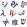

South Ossetia
Republic of South Ossetia–State of Alania[1] Official names | |
|---|---|
| Anthem: Республикӕ Хуссар Ирыстоны Паддзахадон гимн (Ossetian) "National Anthem of the Republic of South Ossetia" | |
South Ossetia in dark green, with Georgia in dark grey | |
| Status | Partially recognised state |
| Capital and largest city | Tskhinvali 42°13′30″N 43°58′12″E / 42.22500°N 43.97000°E |
| Official languages | |
| Ethnic groups (2015) | |
| Government | Unitary semi-presidential republic |
| Alan Gagloev | |
| Konstantin Dzhussoev | |
| Legislature | Parliament |
| Independence from Georgia | |
• As the South Ossetian Soviet Democratic Republic | 20 September 1990 |
• As the Republic of South Ossetia | 21 December 1991 |
| Area | |
• Total | 3,885[3] km2 (1,500 sq mi) |
• Water (%) | negligible |
| Population | |
• 2022 estimate | 56,520[4] |
• 2015 census | 53,532 (212th) |
• Density | 13.7/km2 (35.5/sq mi) |
| GDP (nominal) | 2021 estimate |
• Total | $52 million[5] |
• Per capita | $1,000 |
| Currency | Russian ruble (RUB) |
| Time zone | UTC+03:00 (MSK) |
| Drives on | right |
| Calling code | +7 929 |
South Ossetia[n 1] (/ɒˈsɛtiə/ o-SET-ee-ə, less common: /ɒˈsiːʃə/ o-SEE-shə),[6] officially the Republic of South Ossetia–State of Alania,[7][8] is a partially recognised[9] landlocked country in the South Caucasus.[10] It has an officially stated population of just over 56,500 people (2022), who live in an area of 3,900 square kilometres (1,500 sq mi), with 33,000 living in the capital city, Tskhinvali.
As of 2024, only five members of the United Nations (UN) recognise South Ossetia as a sovereign state – Russia, Venezuela, Nicaragua, Nauru, and Syria.[11] The Georgian government and all other UN member states regard South Ossetia as sovereign territory of Georgia.[12]
The political status of South Ossetia is a central issue of the Georgian–Ossetian conflict and Georgia–Russia relations. The Georgian constitution designates the area as "the former autonomous district of South Ossetia", in reference to the South Ossetian Autonomous Oblast disbanded in 1990.[13] The Georgian government informally refers to the area as the Tskhinvali region[n 2] and considers it a part of Georgia's Shida Kartli region. Lacking effective control over the territory, Georgia maintains an administrative body called the Provisional Administration of South Ossetia.
The South Ossetian Autonomous Oblast, established by Soviet authorities in Moscow in 1922, declared independence from the Georgian Soviet Socialist Republic in September 1990. Towards the end of 1990, the situation for ethnic Georgians in the region worsened sharply. There were reports of multiple cases of lootings and beatings committed both by Georgian and Ossetian forces and paramilitaries.[14] The Georgian government responded by abolishing South Ossetia's autonomy and dispatching its troops to the region.[15] The escalating crisis led to the 1991–1992 South Ossetia War with Russian involvement on the Ossetian side.[16][17][18] After the war, the conflict remained frozen throughout 1990s and saw two major escalations in 2000s: in 2004 and in 2008.[19][20] The latter conflict led to the full-scale Russo-Georgian War of August 2008, during which Ossetian and Russian forces gained full de facto control of the territory of the former South Ossetian Autonomous Oblast. Since the 2008 war, Georgia and a significant part of the international community have regarded South Ossetia as occupied by the Russian military.
South Ossetia relies heavily on military, political, and financial aid from Russia.[21][22] Since 2008, the South Ossetian government has expressed their intention of joining the Russian Federation; if successful, this would end its proclaimed independence. The prospect of a referendum on this matter has been raised multiple times in domestic politics, but none have taken place.
History
[edit]Medieval and early modern period
[edit]The Ossetians are believed to originate from the Alans, a nomadic Iranian tribe.[23] In the 8th century a consolidated Alan kingdom, referred to in sources of the period as Alania, emerged in the northern Caucasus Mountains. Around 1239–1277 Alania fell to the Mongol and later to the Timur's armies, who massacred much of the Alanian population. The survivors among the Alans retreated into the mountains of the central Caucasus and gradually started migration to the south, across the Caucasus Mountains into the Kingdom of Georgia.[24][26]
In the 17th century, by pressure of Kabardian princes, Ossetians started a second wave of migration from the North Caucasus to the Kingdom of Kartli.[27] Ossetian peasants, who were migrating to the mountainous areas of the South Caucasus, often settled in the lands of Georgian feudal lords.[28] The Georgian King of the Kingdom of Kartli permitted Ossetians to immigrate.[29] According to Russian ambassador to Georgia Mikhail Tatishchev, at the beginning of the 17th century there was already a small group of Ossetians living near the headwaters of the Great Liakhvi.[29][30] In the 1770s there were more Ossetians living in Kartli than ever before.
This period has been documented in the travel diaries of Johann Anton Güldenstädt who visited Georgia in 1772. The Baltic German explorer called modern North Ossetia–Alania simply Ossetia, while he wrote that Kartli (the areas of modern-day South Ossetia) was populated by Georgians and the mountainous areas were populated by both Georgians and Ossetians.[31] Güldenstädt also wrote that the northernmost border of Kartli is the Major Caucasus Ridge.[32][33][34] By the end of 18th century, the ultimate sites of Ossetian settlement on the territory of modern South Ossetia were in Kudaro (Jejora river estuary), Greater Liakhvi gorge, the gorge of Little Liakhvi, Ksani River gorge, Guda (Tetri Aragvi estuary) and Truso (Terek estuary).[35]
The Georgian Kingdom of Kartli-Kakheti, including the territory of modern South Ossetia, was annexed by the Russian Empire in 1801. Ossetia, the area comprising modern North Ossetia, was among the first areas of the North Caucasus to come under Russian domination, starting in 1774.[36] The capital, Vladikavkaz, was the first Russian military outpost in the region.[37] By 1806, Ossetia was completely under Russian control. Ossetian migration to Georgian areas continued in the 19th and 20th centuries, when Georgia was part of the Russian Empire and Ossetian settlements emerged in Trialeti, Borjomi, Bakuriani and Kakheti as well.[35]
South Ossetia as a part of the Soviet Union
[edit]Following the Russian revolution,[38] the area of modern South Ossetia became part of the Democratic Republic of Georgia.[39] In 1918, conflict began between the landless Ossetian peasants living in Shida Kartli (Interior Georgia), who were influenced by Bolshevism and demanded ownership of the lands they worked, and the Menshevik government backed ethnic Georgian aristocrats, who were legal owners. Although the Ossetians were initially discontented with the economic policies of the central government, the tension soon transformed into ethnic conflict.[39] The first Ossetian rebellion began in February 1918, when three Georgian princes were killed and their land was seized by the Ossetians. The central government of Tiflis retaliated by sending the National Guard to the area. However, the Georgian unit retreated after they had engaged the Ossetians.[40] Ossetian rebels then proceeded to occupy the town of Tskhinvali and began attacking the ethnic Georgian civilian population. During uprisings in 1919 and 1920, the Ossetians were covertly supported by Soviet Russia, but even so, were defeated.[39] According to allegations made by Ossetian sources, the crushing of the 1920 uprising caused the death of 5,000 Ossetians, while ensuing hunger and epidemics were the causes of death of more than 13,000 people.[41]
The Soviet Georgian government, established after the Red Army invasion of Georgia in 1921, created an autonomous administrative unit for Transcaucasian Ossetians in April 1922 under pressure from Kavbiuro (the Caucasian Bureau of the Central Committee of the Communist Party of the Soviet Union), called the South Ossetian Autonomous Oblast (AO).[42] Some believe that the Bolsheviks granted this autonomy to the Ossetians in exchange for their (Bolshevik) loyalty in fighting the Democratic Republic of Georgia and favouring local separatists, since this area had never been a separate entity prior to the Russian invasion.[43][45] The drawing of administrative boundaries of the South Ossetian AO was quite a complicated process. Many Georgian villages were included within the South Ossetian AO despite numerous protests by the Georgian population. While the city of Tskhinvali did not have a majority Ossetian population, it was made the capital of the South Ossetian AO.[42][46] In addition to parts of Gori uezd and Dusheti uezd of Tiflis Governorate, parts of Racha uezd of Kutaisi Governorate (western Georgia) were also included within the South Ossetian AO. All these territories historically had been indigenous Georgian lands.[47]
Historical Ossetia in the North Caucasus did not have its own political entity before 1924, when the North Ossetian Autonomous Oblast was created.[47]
Although the Ossetians had their own language (Ossetian), Russian and Georgian were administrative/state languages.[48] Under the rule of Georgia's government during Soviet times, Ossetians enjoyed minority cultural autonomy, including speaking the Ossetian language and teaching it in schools.[48] In 1989, two-thirds of Ossetians in the Georgian Soviet Socialist Republic lived outside the South Ossetian AO.[49]
Georgian-Ossetian conflict
[edit]1989–2008
[edit]Tensions in the region began to rise amid rising nationalism among both Georgians and Ossetians in 1989.[50] Before this, the two communities of the South Ossetian Autonomous Oblast of the Georgian SSR had been living in peace with each other except for the 1918–1920 events. Both ethnicities had a normal degree of interaction and there were many Georgian-Ossetian intermarriages.[51]
The dispute surrounding the presence of the Ossetian people in the South Caucasus has been one of the causes of conflict. Although Georgian historiography believes that Ossetian mass migration to the South Caucasus (Georgia) began in the 17th century, Ossetians claim to have been residing in the area since the ancient times,[15] which is not supported by available sources.[52] Some Ossetian historians accept that the migration of Ossetian ancestors to modern South Ossetia began after the Mongol invasions of the 13th century, while one South Ossetian de facto foreign minister in the 1990s said that the Ossetians first appeared in the area only in the early 17th century.[53] Since it was created after the Russian invasion of 1921, South Ossetia was regarded as artificial creation by Georgians during the Soviet era.[15]
The South Ossetian Popular Front (Ademon Nykhas) was created in 1988. On 10 November 1989, the South Ossetian regional council asked the Georgian Supreme Council to upgrade the region to the status of an "autonomous republic".[15] The decision to transform the South Ossetian AO into the South Ossetian ASSR by the South Ossetian authorities escalated the conflict. On 11 November, this decision was revoked by the Georgian parliament, the Supreme Soviet.[54] The Georgian authorities removed the First Party Secretary of the oblast from his position.[55][56]
The Georgian Supreme Council adopted a law barring regional parties in summer 1990. The South Ossetian regional council interpreted this as a move against Ademon Nykhas and subsequently passed a "declaration of national sovereignty", proclaiming the South Ossetian Soviet Democratic Republic within the Soviet Union on 20 September 1990.[57] Ossetians boycotted subsequent Georgian parliamentary elections and held their own contest in December.[15]
In October 1990, the parliamentary election in Georgia was won by Zviad Gamsakhurdia's "Round Table" block.[15] On 11 December 1990, Zviad Gamsakhurdia's government declared the Ossetian election illegitimate and abolished South Ossetia's autonomous status altogether.[15] Gamsakhurdia rationalised the abolition of Ossetian autonomy by saying, "They [Ossetians] have no right to a state here in Georgia. They are a national minority. Their homeland is North Ossetia .... Here they are newcomers."[53]
When the Georgian parliament declared a state of emergency in the territory of South Ossetian AO on 12 December 1990, troops from both Georgian and Soviet interior ministries were sent to the region. After the Georgian National Guard was formed in early 1991, Georgian troops entered Tskhinvali on 5 January 1991.[58] The 1991–1992 South Ossetia War was characterised by general disregard for international humanitarian law by uncontrollable militias, with both sides reporting atrocities.[58] The Soviet military facilitated a ceasefire as ordered by Mikhail Gorbachev in January 1991. In March and April 1991, Soviet interior troops were reported actively disarming militias on both sides, and deterring the inter-ethnic violence. Zviad Gamsakhurdia asserted that the Soviet leadership was encouraging South Ossetian separatism in order to force Georgia not to leave the Soviet Union. Georgia declared its independence in April 1991.[59][53]
As a result of the war, about 100,000 ethnic Ossetians fled the territory and Georgia proper, most across the border into North Ossetia. A further 23,000 ethnic Georgians fled South Ossetia to other parts of Georgia.[60] Many refugees went to the North Ossetian Prigorodnyi District. In 1944, many South Ossetians were resettled in areas of North Ossetia from which the Ingush had been expelled by Stalin in 1944. In the 1990s the new wave of South Ossetians migrating to the former Ingush territory fuelled conflict between Ossetians and Ingush.[60][61]
On 29 April 1991, the western part of South Ossetia was affected by an earthquake, which killed more than 200 and left tens of thousands homeless.[62][63]
In late 1991, dissent was mounting against Gamsakhurdia in Georgia due to his intolerance of critics and attempts to concentrate political power.[59] On 22 December 1991, after a coup d'état, Gamsakhurdia and his supporters were besieged by the opposition, which was backed by the national guard, in several government buildings in Tbilisi. The ensuing heavy fighting resulted in over 200 casualties and left the center of the Georgian capital in ruins. On 6 January, Gamsakhurdia and several of his supporters fled the city for exile. Afterwards, the Georgian military council, an interim government, was formed by a triumvirate of Jaba Ioseliani, Tengiz Kitovani and Tengiz Sigua, and, in March 1992, they invited Eduard Shevardnadze, a former Soviet minister, to come to Georgia to assume control of the Georgian State Council.[65][66]
An independence referendum was held in South Ossetia on 19 January 1992,[67] with voters being asked two questions: "Do you agree that South Ossetia should be an independent country?" and "Do you agree with the South Ossetian parliament's solution of 1 September 1991 on reunion with Russia?"[67] Both proposals were approved,[67] but the results were not recognised internationally.[68] Nonetheless, the South Ossetian regional council subsequently passed an "act of state independence" and declared the independence of the Republic of South Ossetia on 29 May 1992.[57]
On 24 June 1992, Shevardnadze and the South Ossetian government signed the Sochi ceasefire agreement, brokered by Russia. The agreement included obligations to avoid the use of force, and Georgia pledged not to impose sanctions against South Ossetia. The Georgian government retained control over substantial portions of South Ossetia,[69] including the town of Akhalgori.[71] A Joined Peacekeeping force of Ossetians, Russians and Georgians was established. On 6 November 1992, the Organization for Security and Co-operation in Europe (OSCE) set up a mission in Georgia to monitor the peacekeeping operation. From then until mid-2004, South Ossetia was generally peaceful.[72][73]
Following the 2003 Rose Revolution, Mikheil Saakashvili became the President of Georgia in 2004. Ahead of the 2004 parliamentary and presidential elections, he promised to restore the territorial integrity of Georgia.[74] During one of his early speeches, Saakashvili addressed the separatist regions, saying, "[N]either Georgia nor its president will put up with disintegration of Georgia. Therefore, we offer immediate negotiations to our Abkhazian and Ossetian friends. We are ready to discuss every model of statehood by taking into consideration their interests for the promotion of their future development."[75]
Since 2004, tensions began to rise as the Georgian authorities strengthened their efforts to bring the region back under their rule, after it succeeded in Adjara. Georgia sent police to close down the Ergneti black market, which was one of the region's chief sources of revenue, selling foodstuffs and fuel smuggled from Russia. The Georgian authorities claimed the massive smuggling of goods for the Ergneti market through the Roki Tunnel, which was not under Georgian control, cost the country significant amounts of custom revenues.[76] Georgia proposed to bring the Roki tunnel under joint control and monitoring, which was refused by the South Ossetian side.[77] The antismuggling operation against the market resulted in a breakdown of South Ossetian trust in Georgia's intentions.[78] A wave of violence erupted between Georgian peacekeepers and South Ossetian militiamen and freelance fighters from Russia.[79][80] This included hostage taking of dozens of Georgian peacekeepers,[81] shootouts and shelling of Georgian controlled villages, which left dozens dead and wounded. A ceasefire deal was reached on 13 August though it was repeatedly violated.[82][80]
The Georgian government protested against the allegedly increasing Russian economic and political presence in the region and against the uncontrolled military of the South Ossetian side.[83][84][85] Georgian government officials have stated South Ossetian key security positions are occupied by (former) Russian security officials,[87] while some political researchers speak of institutions being outsourced to the Russian Federation.[89]
It also considered the peacekeeping force (consisting in equal parts of South Ossetians, North Ossetians, Russians and Georgians) to be non-neutral and demanded its replacement. Various proposals were launched by the Georgian side to internationalise the peacekeeping in South Ossetia.[90][91][92][93] According to U.S. senator Richard Lugar, the United States supported Georgia's call in 2006 for the withdrawal of Russian "peacekeepers" from the conflict zones.[94] Later, EU South Caucasus envoy Peter Semneby said that "Russia's actions in the Georgia spy row have damaged its credibility as a neutral peacekeeper in the EU's Black Sea neighbourhood."[95] Joe Biden (Chairman, U.S. Senate Foreign Relations Committee), Richard Lugar, and Mel Martínez sponsored a resolution in June 2008 accusing Russia of attempting to undermine Georgia's territorial integrity and called for replacing the Russian-comprised peacekeeping force operating under CIS mandate.[96]
2008 war
[edit]Tensions between Georgia and Russia began escalating in April 2008.[97][98][99] A bomb explosion on 1 August 2008 targeted a car transporting Georgian peacekeepers. South Ossetians were responsible for instigating this incident, which marked the opening of hostilities and injured five Georgian servicemen. In response,[100] several South Ossetian militiamen were hit.[101] South Ossetian separatists began shelling Georgian villages on 1 August. These artillery attacks caused Georgian servicemen to return fire periodically from 1 August.[97][101][102][103][104]
At around 19:00 on 7 August 2008, Georgian president Mikheil Saakashvili announced a unilateral ceasefire and called for peace talks.[105] However, escalating assaults against Georgian villages (located in the South Ossetian conflict zone) were soon matched with gunfire from Georgian troops,[106][107] who then proceeded to move in the direction of the capital of the self-proclaimed Republic of South Ossetia (Tskhinvali) on the night of 8 August, reaching its center in the morning of 8 August.[108] One Georgian diplomat told Russian newspaper Kommersant on 8 August that by taking control of Tskhinvali, Tbilisi wanted to demonstrate that Georgia would not tolerate the killing of Georgian citizens.[109] According to Russian military expert Pavel Felgenhauer, the Ossetian provocation was aimed at triggering the Georgian response, which was needed as a pretext for premeditated Russian military invasion.[110] According to Georgian intelligence,[111] and several Russian media reports, parts of the regular (non-peacekeeping) Russian Army had already moved to South Ossetian territory through the Roki Tunnel before the Georgian military action.[112]
Russia accused Georgia of "aggression against South Ossetia",[43] and launched a large-scale land, air, and sea invasion of Georgia with the pretext of a "peace enforcement operation" on 8 August 2008.[103] Russian airstrikes against targets within Georgia were also launched.[113] Abkhaz forces opened a second front on 9 August by attacking the Kodori Gorge, held by Georgia.[114] Tskhinvali was seized by the Russian military by 10 August.[113] Russian forces occupied the Georgian cities of Zugdidi,[115] Senaki,[116] Poti,[117] and Gori (the last one after the ceasefire agreement was negotiated).[118] The Russian Black Sea Fleet blockaded the Georgian coast.[103]
A campaign of ethnic cleansing against Georgians in South Ossetia was conducted by South Ossetians,[119] with Georgian villages around Tskhinvali being destroyed after the war had ended.[120] The war displaced 192,000 people,[121] and while many were able to return to their homes after the war, a year later around 30,000 ethnic Georgians remained displaced.[122] In an interview published in Kommersant, South Ossetian leader Eduard Kokoity said he would not allow Georgians to return.[123][124]
President of France Nicolas Sarkozy negotiated a ceasefire agreement on 12 August 2008.[125] On 17 August, Russian president Dmitry Medvedev announced that Russian forces would begin to pull out of Georgia the following day.[126] Russia recognised Abkhazia and South Ossetia as separate republics on 26 August.[127] In response to Russia's recognition, the Georgian government severed diplomatic relations with Russia.[128] Russian forces left the buffer areas bordering Abkhazia and South Ossetia on 8 October and the European Union Monitoring Mission in Georgia assumed authority over the buffer areas.[129][130] Since the war, Georgia has maintained that Abkhazia and South Ossetia are Russian-occupied Georgian territories.[131][132]
On 30 September 2009, the European Union–sponsored Independent International Fact-Finding Mission on the Conflict in Georgia stated that, while preceded by months of mutual provocations, "open hostilities began with a large-scale Georgian military operation against the town of Tskhinvali and the surrounding areas, launched in the night of 7 to 8 August 2008."[133][134]
After the 2008 war
[edit]In 2016, a referendum on integration with Russia was proposed during an election campaign, but was put on hold indefinitely.[135] A referendum on South Ossetia's official name was held on 9 April 2017; over three-quarters of those who voted supported amendments to the South Ossetian constitution which gave the names "Republic of South Ossetia" and "State of Alania" equal status under the law.[136]
South Ossetia was rocked by its most significant protests from 2020 to 2021 following the Murder of Inal Djabiev. Djabiev, a vocal member of the South Ossetian opposition to Anatoly Bibilov had been tortured to death by the South Ossetian Police resulting in months of protests and sacking of several government ministers.[137][138][139]
President Anatoly Bibilov announced on 26 March 2022 that South Ossetian troops had been sent to assist Russia in its invasion of Ukraine.[140][141] Bibilov announced on 30 March 2022 that South Ossetia would initiate the legal process to become part of Russia.[142] Russian politicians reacted positively and said Russian law would permit (parts of) foreign nations to join the federation. They highlighted the necessity to "express the will of the Ossetian people" through a referendum.[143] Ossetian leader Bibilov said in a lengthy interview that he planned to hold two referendums, one on annexation by Russia, and the second vote on joining North Ossetia,[144] for which he set the election proceedings in motion on April 7, 2022.[145] On May 13, the annexation referendum was scheduled to take place on July 17.[146][147]
Following Biblov's defeat in 2022 election, the new president, Alan Gagloev, suspended the referendum on May 30.[148] Gagloyev announced in August 2022 that border crossings with Georgia would be open ten days a month.[149]
Geography
[edit]
South Ossetia is a very mountainous region located in the Caucasus at the juncture of Asia and Europe. It occupies the southern slopes of the Greater Caucasus mountain range and its foothills which are part of the Iberia Plain, a geographic plateau that is roughly in the center of South Ossetia.[151] The Likhi Range shapes the western geographic boundary of South Ossetia, although the northwestern corner of South Ossetia is located west of the range.
The Greater Caucasus Mountain Range forms the northern border of South Ossetia with Russia. There is only one main road through the mountain range from South Ossetia to Russia, the TransKAM highway through the Roki tunnel into North Ossetia, which was completed in 1986. The Transkam section located in South Ossetia is nominally part of the Georgian S10 highway even though Tbilisi effectively does not control that part. The Roki Tunnel was vital for the Russian military in the 2008 South Ossetia war because it is the only direct route through the Caucasus Mountains between Russia and South Ossetia.[153][154]
South Ossetia covers an area of about 3,900 km2 (1,506 sq mi),[156][157] separated by the mountains from the more populous North Ossetia (which is a republic within Russia) and extending southwards almost to the Mtkvari river in Georgia. More than 89% of South Ossetia lies over 1,000 m (3,281 ft) above sea level, and its highest point is Mount Khalatsa at 3,938 m (12,920 ft) above sea level.[158]
Out of the roughly 2,000 glaciers that exist in the Greater Caucasus, approximately 30% are located within Georgia. The 10 glaciers of the Liakhvi River basin and a handful of the Rioni River basin are located in South Ossetia.[160]
Most of South Ossetia is in the Kura Basin with the northwestern part it in the Black Sea basin. The Likhi and Racha ridges act as divide separating these two basins. Major rivers in South Ossetia include the Greater and Little Liakhvi, Ksani, Medzhuda, Tlidon, Canal Saltanis, Ptsa River and host of other tributaries.
Climate
[edit]South Ossetia's climate is affected by subtropical influences from the East and Mediterranean influences from the West. The Greater Caucasus range moderates the local climate by serving as a barrier against cold air from the north, which results in the fact that, even at great heights, it is warmer there than in the Northern Caucasus.[161][162] Climatic zones in South Ossetia are determined by distance from the Black Sea and by altitude. The plains of eastern Georgia are shielded from the influence of the Black Sea by mountains that provide a more continental climate.[citation needed]
The foothills and mountainous areas (including the Greater Caucasus Mountains) experience cool, wet summers and snowy winters, with snow cover often exceeding two meters in many regions. The penetration of humid air masses from the Black Sea to the west of South Ossetia is often blocked by the Likhi mountain range. The wettest periods of the year in South Ossetia generally occur during spring and autumn while the winter and summer months tend to be the driest. Elevation plays an important role in South Ossetia where climatic conditions above 1,500 m (4,921 ft) are considerably colder than in any lower-lying areas. The regions that lie above 2,000 m (6,562 ft) frequently experience frost even during the summer months.[citation needed]
The average temperature in South Ossetia in January is around +4 degrees Celsius, and the average temperature in July is around +20.3 degrees Celsius. The average yearly liquid precipitation in South Ossetia is around 598 millimetres.[161] In general, summer temperatures average 20 °C (68 °F) to 24 °C (75.2 °F) across much of South Ossetia, and winter temperatures average 2 °C (35.6 °F) to 4 °C (39.2 °F). Humidity is relatively low and rainfall across South Ossetia averages 500 to 800 mm (19.7 to 31.5 in) per year, but Alpine and highland regions have distinct microclimates. At higher elevations, precipitation is sometimes twice as heavy as in the eastern plains of Georgia. Alpine conditions begin at about 2,100 m (6,890 ft), and above 3,600 m (11,811 ft) snow and ice are present year-round.[citation needed]
Encroachment
[edit]The Russian troops who patrol the borders of South Ossetia have reportedly been expanding the boundaries of the region through “encroaching occupation”, meaning they surreptitiously advance several feet at a time into Georgian-held territory.[163]
Political status
[edit]Following the 2008 South Ossetia war, Russia recognised South Ossetia as independent.[164] This unilateral recognition by Russia was met by condemnation from Western Blocs, such as NATO, Organization for Security and Co-operation in Europe (OSCE) and the European Council due to the violation of Georgia's territorial integrity.[165][166][167][168] The EU's diplomatic response to the news was delayed by disagreements between eastern European states, the UK wanting a harsher response and Germany, France and other states' desire not to isolate Russia.[169] Former US envoy Richard Holbrooke said the conflict could encourage separatist movements in other former Soviet states along Russia's western border.[170] Several days later, Nicaragua became the second country to recognise South Ossetia.[164] Venezuela recognised South Ossetia on 10 September 2009, becoming the third UN member state to do so.[171]
The European Union, Council of Europe, North Atlantic Treaty Organization (NATO) and most UN member countries do not recognise South Ossetia as an independent state. The de facto republic governed by the secessionist government held a second independence referendum[172] on 12 November 2006, after its first referendum in 1992 was not recognised by most governments as valid.[173] According to the Tskhinvali election authorities, the referendum turned out a majority for independence from Georgia where 99% of South Ossetian voters supported independence and the turnout for the vote was 95%.[174] The referendum was monitored by a team of 34 international observers from Germany, Austria, Poland, Sweden and other countries at 78 polling stations.[175] However, it was not recognised internationally by the UN, European Union, OSCE, NATO and the Russian Federation, given the lack of ethnic Georgian participation and the illegality of such a referendum without recognition from the Georgian government in Tbilisi.[176] The European Union, OSCE and NATO condemned the referendum.
Parallel to the secessionist held referendum and elections, to Eduard Kokoity, the then President of South Ossetia, the Ossetian opposition movement (People of South Ossetia for Peace) organised their own elections contemporaneously in Georgian-controlled areas within South Ossetia, in which Georgian and some Ossetian inhabitants of the region voted in favour of Dmitry Sanakoyev as the alternative President of South Ossetia.[177] The alternative elections of Sanakoyev claimed full support of the ethnic Georgian population.[178]
In April 2007, Georgia created the Provisional Administrative Entity of South Ossetia,[179][180][181] staffed by ethnic Ossetian members of the separatist movement. Dmitry Sanakoyev was assigned as the leader of the Entity. It was intended that this provisional administration would negotiate with central Georgian authorities regarding its final status and conflict resolution.[182] On 10 May 2007, Sanakoyev was appointed by the President of Georgia as the Head of South Ossetian Provisional Administrative Entity.
On 13 July 2007, Georgia set up a state commission, chaired by the Prime Minister Zurab Noghaideli, to develop South Ossetia's autonomous status within the Georgian state. According to the Georgian officials, the status was to be elaborated within the framework of "an all-inclusive dialogue" with all the forces and communities within the Ossetian society.[183]
South Ossetia, Transnistria and Abkhazia are sometimes referred to as post-Soviet "frozen conflict" zones.[184][185]
Plans for integration with the Russian Federation
[edit]On 30 August 2008, Tarzan Kokoity, the Deputy Speaker of South Ossetia's parliament, announced that the region would soon be absorbed into Russia, so that South and North Ossetians could live together in one united Russian state.[186] Russian and South Ossetian forces began giving residents in Akhalgori, the biggest town in the predominantly ethnic Georgian eastern part of South Ossetia, the choice of accepting Russian citizenship or leaving.[187] However, Eduard Kokoity, the then president of South Ossetia, later stated that South Ossetia would not give up its independence by joining Russia: "We are not going to say no to our independence, which has been achieved at the expense of many lives; South Ossetia has no plans to join Russia." Civil Georgia has said that this statement contradicts previous ones made by Kokoity earlier that day, when he indicated that South Ossetia would join North Ossetia in the Russian Federation.[186][188]
The South Ossetian and Russian presidents signed an "alliance and integration" treaty on 18 March 2015.[189] The agreement includes provisions to incorporate the South Ossetian military into Russia's armed forces, integrate the customs service of South Ossetia into that of Russia's, and commit Russia to paying state worker salaries in South Ossetia at rates equal to those in the North Caucasus Federal District.[190] The Associated Press described the treaty as calling for "nearly full integration" and compared it to a 2014 agreement between Russia and Abkhazia.[189] The Georgian Foreign Ministry described the signing of the treaty as "actual annexation" of the disputed region by Russia, and the United States and European Union said they would not recognise it.[191][192]
In another move towards integration with the Russian Federation, South Ossetian President Leonid Tibilov proposed in December 2015 a name change to South Ossetia–Alania – in analogy with North Ossetia–Alania, a Russian federal subject. Tibilov furthermore suggested holding a referendum on joining the Russian Federation prior to April 2017, which would lead to a united "Ossetia–Alania".[193] In April 2016, Tibilov said he intended to hold the referendum before August of that year.[194][195] However, on 30 May, Tibilov postponed the referendum until after the presidential election due in April 2017.[196] At the name-change referendum, nearly 80 per cent of those who voted endorsed the name-change, while the presidential race was won by Anatoliy Bibilov – against the incumbent, Tibilov, who had been supported by Moscow and who, unlike Bibilov, was ready to heed Moscow's wish for the integration referendum not be held any time soon.[197]
On 30 March 2022, President Anatoly Bibilov announced his intention to begin legal proceedings in the near future to integration with the Russian Federation,[142] although he subsequently lost the presidency in the 2022 South Ossetian presidential election.
Law on occupied territories of Georgia
[edit]In late October 2008, President Saakashvili signed into law legislation on the occupied territories passed by the Georgian Parliament. The law covers the breakaway regions of Abkhazia and Tskhinvali (territories of former South Ossetian Autonomous Oblast).[198][199] The law spells out restrictions on free movement to, economic activity and concluding real estate transactions in these territories. In particular, according to the law, foreign citizens should enter the two breakaway regions only through Georgia. Entry into Abkhazia should be carried out from Zugdidi Municipality and into South Ossetia from Gori Municipality.[200]
The main road leading to South Ossetia from the rest of Georgia passes through the Gori Municipality. However, this road is closed in both directions at Ergneti since 2008.[201] The main crossing point that remained open for Georgians and South Ossetians, to the Akhalgori district, has been closed by South Ossetia since 2019.[202] Furthermore, the South Ossetian authorities only allow entry of foreigners "through the territory of the Russian Federation".[203]
The Georgian legislation, however, also lists "special" cases in which entry into the breakaway regions will not be regarded as illegal. It stipulates that a special permit on entry into the breakaway regions can be issued if the trip there "serves Georgia's state interests; peaceful resolution of the conflict; de-occupation or humanitarian purposes."[204] The law also bans any type of economic activity – entrepreneurial or non- entrepreneurial, if such activities require permits, licences or registration in accordance with Georgian legislation. It also bans air, sea and railway communications and international transit via the regions, mineral exploration and money transfers.[205] The provision covering economic activities is retroactive, going back to 1990.[206]
The law says that the Russian Federation – the state which has carried out military occupation – is fully responsible for the violation of human rights in Abkhazia and South Ossetia. The Russian Federation, according to the document, is also responsible for compensation of material and moral damage inflicted on Georgian citizens, stateless persons and foreign citizens, who are in Georgia and enter the occupied territories with appropriate permits.[207] The law also says that de facto state agencies and officials operating in the occupied territories are regarded by Georgia as illegal.[208] The law will remain in force until "the full restoration of Georgian jurisdiction" over the breakaway regions is realised.[209]
In November 2009, during the opening ceremony of a new Georgian Embassy building in Kyiv, Ukraine, Georgian President Mikheil Saakashvili stated that residents of South Ossetia and Abkhazia could also use its facilities: "I would like to assure you, my dear friends, that this is your home, as well, and here you will always be able to find support and understanding".[210]
Politics
[edit]| Constitution |
|---|
Until the armed conflict of August 2008, South Ossetia consisted of a checkerboard of Georgian-inhabited and Ossetian-inhabited towns and villages.[211] The largely Ossetian capital city of Tskhinvali and most of the other Ossetian-inhabited communities were governed by the separatist government, while the Georgian-inhabited villages and towns were administered by the Georgian government. This close proximity and the intermixing of the two communities has made the Georgian–Ossetian conflict particularly dangerous, since any attempt to create an ethnically pure territory would involve population transfers on a large scale.
The political dispute has yet to be resolved and the South Ossetian separatist authorities govern the region with effective independence from Tbilisi. Although talks have been held periodically between the two sides, little progress was made under the government of Eduard Shevardnadze (1993–2003). His successor Mikheil Saakashvili (elected 2004) made the reassertion of Georgian governmental authority a political priority. Having successfully put an end to the de facto independence of the southwestern province of Ajaria in May 2004, he pledged to seek a similar solution in South Ossetia. After the 2004 clashes, the Georgian government has intensified its efforts to bring the problem to international attention. On 25 January 2005, President Saakashvili presented a Georgian vision for resolving the South Ossetian conflict at the Parliamentary Assembly of the Council of Europe session in Strasbourg. Late in October, Prime Minister Zurab Noghaideli presented the Georgian action plan at the OSCE Permanent Council at Vienna,[90] to which the US government and the OSCE expressed their support.[212] The South Ossetian de facto authorities reacted by saying the plan is "not realistic" and "contains nothing new for the South Ossetian side".[213] On 6 December, the OSCE Ministerial Council in Ljubljana adopted a resolution supporting the Georgian peace plan.[214][215] Prior to the Ministerial Council, the Russian Foreign Ministry rejected the Georgian plan,[216] saying it differed from the plan Saakashvili presented at the UN General Assembly in September 2004,[217] which was favoured by the South Ossetian side. After the OSCE resolution, the South Ossetian side surprised many with their own initiative reminiscent to the Georgian plan,[218] triggering optimism in Tbilisi.[219]
Government
[edit]According to Article 47 of the South Ossetian Constitution, the president of the Republic of South Ossetia is the head of state and head of the executive branch of government. The president of the republic is elected for five years by direct popular vote, with a maximum of two consecutive terms for the same person. South Ossetia's legislative body is the unicameral parliament, which consists of 34 members who are elected by popular vote for five years in a mixed system of 17 single-member constituencies and 17 delegates elected through proportional representation (article 57).[220]
Since 24 May 2022, Alan Gagloev has been the president of the republic, winning the contested election of the then incumbent Anatoly Bibilov.[221]
Military
[edit]South Ossetia's armed forces in 2017 were partially incorporated into the Russian Armed Forces.[222] The Russian armed forces have established the 4th Guards Military Base in South Ossetia, which is based in Tskhinvali, with training sites north from the city (Dzartsem) and near Java, where a branch of the base is hosted at the village Ugardanta for the Russian Airborne Forces.[223] Furthermore, Russia has established nearly 20 so called "militarized border guard bases"[224] near the boundary line with Tbilisi controlled Georgia, which fall under the command and responsibility of the Russian FSB and are tasked with enforcing a "state border" between South Ossetia and Georgia.[225][226] An estimated 3,000–3,500 Russian servicemen are deployed in South Ossetia, while an estimated 1,500 FSB personnel are deployed at the border guard bases.[227][228][229] According to South Ossetian de facto authorities, about 450 South Ossetian citizens are employed at the 4th Russian Military Base.[230]
On 26 March 2022, president Bibilov said that South Ossetia had sent troops to aid Russia during the 2022 Russian invasion of Ukraine, stating his troops "understand perfectly that they are going to defend Russia, they are going to defend Ossetia too".[231][232] Roughly a quarter of these troops would desert and hitchhike back to South Ossetia. Bibilov later said that the deserters would face no punishment.[233]
Demographics
[edit]2015 census
Before the Georgian–Ossetian conflict roughly two-thirds of the population of South Ossetia was Ossetian and 25–30% was Georgian. The eastern quarter of South Ossetia, around the town and district of Akhalgori, was predominantly Georgian, while the center and west were predominantly Ossetian. Much of the mountainous north is sparsely inhabited (see map at Languages of the Caucasus).
The Georgian 2002 census was incomplete with regard to South Ossetia, as it only took place in areas under effective Georgian control at the time. This concerned the Georgian populated areas of Akhalgori district and the Georgian communities around Tskhinvali, in the Patara Liachvi and Didi Liakhvi valleys.[234] although according to some estimates there were 47,000 ethnic Ossetians and 17,500 ethnic Georgians in South Ossetia in 2007.[235]
2009 population estimate: During the war, according to Georgian officials, 15,000 Georgians moved to Georgia proper; South Ossetian officials indicate that 30,000 Ossetians fled to North Ossetia, and a total of 500 citizens of South Ossetia were killed.[236][237]
According to the 2015 census conducted by the South Ossetian authorities, the region's total population was 53,532, including 48,146 Ossetians (89.9%), 3,966 Georgians (7.4%), and 610 Russians. The Georgian authorities have questioned the accuracy of these data.[238] Estimates based on official birth rates and school attendance suggest it may have been around 39,000 inhabitants, and an independent estimate from 2009 put the population at 26,000.[239]
According to the South Ossetian Statistical agency the population estimate was 56,520 per 1 January 2022. Of these, 33,054 lived in Tskhinvali.[4]
Eastern Orthodoxy is the major religion practised in South Ossetia, by Ossetians, Georgians and Russians.[240]
| Census year | Ossetians | Georgians | Russians | Armenians | Jews | Others | Total | ||||||
|---|---|---|---|---|---|---|---|---|---|---|---|---|---|
| # | % | # | % | # | % | # | % | # | % | # | % | ||
| 1926 | 60,351 | 23,538 | 157 | 1,374 | 1,739 | 216 | 87,375 | ||||||
| 1939 | 72,266 | 27,525 | 2,111 | 1,537 | 1,979 | 700 | 106,118 | ||||||
| 1959 | 63,698 | 26,584 | 2,380 | 1,555 | 1,723 | 867 | 96,807 | ||||||
| 1970 | 66,073 | 28,125 | 1,574 | 1,254 | 1,485 | 910 | 99,421 | ||||||
| 1979 | 65,077 | 28,187 | 2,046 | 953 | 654 | 1,071 | 97,988 | ||||||
| 1989 | 65,232 | 28,544 | 2,128 | 984 | 397 | 1,242 | 98,527 | ||||||
| 2015 | 48,146 | 3,966 | 610 | 378 | 1 | 431 | 53,532 | ||||||
| Source:[241][242][243] | |||||||||||||
Economy
[edit]South Ossetia's economy is primarily agricultural, although less than 10% of South Ossetia's land area is cultivated. Cereals, fruit and vines are the major produce. Forestry and cattle industries are also maintained. A number of industrial facilities also exist, particularly around the capital, Tskhinvali. Following the war in the 1990s, South Ossetia struggled economically. South Ossetian GDP was estimated at US$15 million (US$250 per capita) in a work published in 2002.[244] In 2017, the Administration of South Ossetia estimated its GDP to be nearly 100 million US dollars.[3] South Ossetia's poverty threshold stood at 3,062 rubles a month in the fourth quarter of 2007, or 23.5 per cent below Russia's average, while South Ossetians have incomparably smaller incomes.[245]
The majority of the population survives on subsistence farming. The South Ossetian authorities planned to improve finances by boosting the local production of flour and thus reducing the need for flour imports. For this purpose, the area planted with wheat was increased tenfold in 2008 from 130 hectares to 1,500 hectares. The wheat harvest in 2008 was expected to be 2,500 tons of grain. The South Ossetian Agriculture ministry also imported some tractors in 2008, and was expecting delivery of more farm machinery in 2009.[245]
Before the 2008 Russo-Georgian War, South Ossetia's industry consisted of 22 small factories, with a total production of 61.6 million rubles in 2006. In 2007, only 7 factories were functioning. In March 2009, it was reported that most of the production facilities were standing idle and were in need of repairs. Even successful factories have a shortage of workers, are in debt and have a shortage of working capital.[245] One of the largest local enterprises is the Emalprovod factory, which has 130 employees.[245] Additionally, after the 2008 war, Georgia cut off supplies of electricity to the Akhalgori region, which aggravated the socio-economic situation in that area.[246]
By the end of 2021, the number of employed people was determined at 20,734 while 2,449 persons were registered as unemployed, on a total working age population of 34,308 (men 18–65, women 18–60).[247] Virtually the only significant economic asset that South Ossetia possesses is control of the Roki Tunnel that is used to link Russia and Georgia, from which the South Ossetian government reportedly obtained a large part of its budget by levying customs duties on freight traffic before the war.[248][249][251]
Since the 2008 war, South Ossetia and its economy are critically dependent on Russian economic assistance,[252] and a year after the war, former President Edurard Kokoity was grateful for the Russian aid for reconstruction work.[253] According to reports Russian donations made up nearly 99% of the budget of South Ossetia by 2010.[254] By 2021 this has been reduced to 83%.[255] A new backup power transmission line running from Russia to South Ossetia was put into operation in November 2021, helping to ensure uninterrupted power supply to the region. It cost more than 1.3 billion rubles ($17m) to construct and was built within the framework of the Russian Investment program in South Ossetia.[256][257]
In 2016, Armenia tried to persuade Georgia to open a transit route between Georgia and South Ossetia, but Georgia refused.[258]
The socio-economic development program of South Ossetia for the 2022–2025 period is financed by Russia.The Aim of the program is for South Ossetia to reach the socio-economic indicators of the North Caucasus Federal District in 2025.[259]
Currency
[edit]Zarin
[edit]One of South Ossetia's official currencies is the Zarin which comes in the following denominations; 20, 25, and 50 Zarin coins, and a 100 Zarin bar. Despite being the official currency, the Zarin is not in circulation, and are used for ceremonial purposes, depicting key events and people in South Ossetian history and are either pure sterling silver (.925) or pure gold (.999) and are largely collectors items.[260]
South Ossetian ruble
[edit]South Ossetia's official circulated currency is the South Ossetian ruble, modeled off the Russian ruble, with the same denominations, decimalized to 100 Kopecks. South Ossetia mints 1, 5, 10, 20 and 50 Kopeck coins, as well as 1, 2, 5, 10, 50 and 100 ruble coins. South Ossetia does not print any paper money.[261] The South Ossetian ruble is pegged to the Russian ruble, and is legal tender in South Ossetia, Russia, and Abkhazia, however, are in far less circulation than the Russian ruble, and are also largely ceremonial.[citation needed]
Russian ruble
[edit]By far the most widely used currency in South Ossetia, and one of the Republic's official currencies, is the Russian ruble, which have been used in the day to day lives of South Ossetians since their independence in 1991.[262] Additionally, since the South Ossetian ruble is pegged to the Russian ruble, the two are often used interchangeably, and due to the lack of South Ossetian paper money, it is common South Ossetians to use Russian paper money, but South Ossetian coins.[263]
Culture
[edit]| Part of a series on the |
| Culture of South Ossetia |
|---|
| History |
| People |
| Languages |
| Mythology |
| Cuisine |
| Religion |
| Literature |
| Music |
Education
[edit]The country's principal university is South Ossetian State University in Tskhinvali.[264] After the Russo-Georgian War in 2008, education officials attempted to place most university-bound students from South Ossetia in Russian post-secondary education institutions.[264]
Public Holidays
[edit]Sport
[edit]South Ossetia has a national football team, which is not a member of FIFA or UEFA. The team won the 2019 CONIFA European Football Cup.[265]
See also
[edit]- North Ossetia-Alania
- 2008 Georgia–Russia crisis
- Abkhazia–South Ossetia relations
- Community for Democracy and Rights of Nations
- Donetsk People's Republic–South Ossetia relations
- Military of South Ossetia
- Russia–South Ossetia relations
- South Ossetian passport
- Vehicle registration plates of South Ossetia
- List of states with limited recognition
Notes
[edit]References
[edit]Citations
[edit]- ^ "Constitution". The official website of the Government of South Ossetia. Archived from the original on 2 October 2022. Retrieved 3 November 2023.
- ^ Wojtasiewicz, Wojciech (1 December 2011). "Presidential Elections in South Ossetia – Plan B". New Eastern Europe. Translated by Bieroń, Tomasz. Archived from the original on 9 May 2013.
The first round of voting was accompanied by a referendum in which the Ossetians were to decide whether Russian should become the second official language of South Ossetia. Nearly 85 per cent of the voters supported the referendum.
- ^ a b "Валовой внутренний продукт". Archived from the original on 13 April 2018. Retrieved 12 April 2018.
- ^ a b Page 9, Statistical Digest 2021, State Statistics of Republic of South Ossetia.[155]
- ^ Moscow Says Abkhazia, S. Ossetia Shall be Less Dependent on Russia, archived from the original on 15 May 2024, retrieved 20 May 2024
- ^ "Ossetia" Archived 23 October 2018 at the Wayback Machine. Collins English Dictionary.
- ^ Fuller, Liz (9 February 2017). "South Ossetia Referendum on Name Change Steers Clear of Thornier Unification Issue". Radio Free Europe/Radio Liberty. Archived from the original on 14 September 2017. Retrieved 23 July 2018.
- ^ "Referendum to rename South Ossetia 'Alania' set for April". OC Media. 7 February 2017. Archived from the original on 24 July 2018. Retrieved 23 July 2018.
- ^ "South Ossetia profile". BBC. 8 March 2023. Archived from the original on 29 July 2018. Retrieved 31 May 2023.
- ^ Foltz, Richard (2022). The Ossetes: Modern-Day Scythians of the Caucasus. London: Bloomsbury. pp. 123–144. ISBN 9780755618453. Archived from the original on 18 February 2023. Retrieved 3 January 2022.
- ^ "Syria Recognizes Abkhazia, South Ossetia". Civil Georgia. 29 May 2018. Archived from the original on 25 May 2022. Retrieved 26 March 2022.
- ^ Robinson, Matt; Mchedlishvili, Niko (24 October 2008). "Georgia seeks to isolate Russian-backed regions". Reuters. Archived from the original on 31 May 2023. Retrieved 31 May 2023.
- ^ "Occupied Territories of Georgia. Tskhinvali region". Archived from the original on 23 August 2017. Retrieved 23 August 2017.
- ^ Human Rights Watch, Bloodshed in the Caucasus: Violations of humanitarian law in the Georgian-Ossetian Conflict Archived 5 March 2016 at the Wayback Machine
- ^ a b c d e f g h i j k l m n Georgia: Avoiding War in South Ossetia (Report). International Crisis Group. 26 November 2004. ICG Europe Report 159. Archived (PDF) from the original on 13 August 2008. Retrieved 3 April 2022.
- ^ "Russians Cope With Arc of Crises". The Christian Science Monitor. 22 June 1992. Archived from the original on 18 November 2023. Retrieved 23 November 2023.
- ^ "Russian threatens Georgia". The Washington Post. 16 June 1992.
- ^ Robert H. Donaldson; Joseph L. Nogee (2005). The Foreign Policy of Russia: Changing Systems, Enduring Interests. M.E. Sharpe. p. 199. ISBN 9780765615688.
- ^ Jean-Rodrigue Paré (13 February 2009). "The Conflict Between Russia and Georgia". Parliament of Canada. Archived from the original on 2 January 2016. Retrieved 19 September 2014.
- ^ Charles King (2008). "The Five-Day War: Managing Moscow After the Georgia Crisis" (PDF). Foreign Affairs (November/December). Georgetown University. Archived (PDF) from the original on 23 September 2014. Retrieved 22 June 2010.
- ^ "South Ossetia Looking Much Like a Failed State". Associated Press. Archived from the original on 8 July 2010. Retrieved 12 July 2010.
- ^ Smolar, Piotr (8 October 2013). "Georgia wary of Russian encroachment". The Guardian. Archived from the original on 6 March 2017. Retrieved 16 December 2016.
- ^ David Marshall Lang, The Georgians, New York, p. 239
- ^ Toal, Gerard (2017). Near Abroad – Putin, the West, and the Contest Over Ukraine and the Caucasus (1st ed.). New York: Oxford University Press. pp. 129–131. ISBN 978-0-19-025330-1. Archived from the original on 6 February 2022. Retrieved 6 February 2022.
- ^ a b Coene, Frederik (2010). The Caucasus, an introduction (1st ed.). London: Routledge. ISBN 978-0-415-66683-1. Archived from the original on 6 February 2022. Retrieved 6 February 2022.
- ^ Coene, page 151 [25]
- ^ Merab Basilaia (2008). ეთნოსები საქართველოში [Ethnic groups in Georgia] (PDF) (in Georgian). Sak'art'velos Saxalxo Damc'veli. pp. 9, 63. ISBN 978-9941-0-0901-3. Archived (PDF) from the original on 8 August 2014. Retrieved 3 August 2014.
- ^ Ossetian Question 1994, p. 38.
- ^ a b Ossetian Question 1994, p. 39.
- ^ (in Russian) С. А. Белокуров. Сношения России с Кавказом, Москва, 1889, с. 508
- ^ Ossetian Question 1994, p. 40.
- ^ Ossetian Question 1994, p. 37.
- ^ (in Russian) Гюльденштедт. Путешествие в Грузию, Тбилиси, 1962
- ^ (in Russian) Гильденштедт И. А. Путешествие по Кавказу в 1770–1773 гг. – СПб.: Петербургское Востоковедение, 2002.
- ^ a b Roland Topchishvili (2009). "Georgian-Ossetian ethno-historical review" (PDF). Tbilisi: Tbilisi State University. Archived from the original (PDF) on 24 December 2013.
- ^ Coene, pages 122–125 [25]
- ^ Foltz, Richard (2022). The Ossetes: Modern-Day Scythians of the Caucasus. London: Bloomsbury. pp. 82–83. ISBN 9780755618453. Archived from the original on 18 February 2023. Retrieved 3 January 2022.
- ^ Souleimanov 2013, p. 99.
- ^ a b c Souleimanov 2013, pp. 112–113.
- ^ Saparov, Arsène (2014). From Conflict to Autonomy in the Caucasus: The Soviet Union and the Making of Abkhazia, South Ossetia and Nagorno Karabakh. Routledge. ISBN 9781317637844. Archived from the original on 5 January 2016. Retrieved 19 November 2015.
- ^ ICG, "Georgia: Avoiding War in South Ossetia", page 3[15]
- ^ a b Ossetian Question 1994, pp. 153–161.
- ^ a b "Russian Federation: Legal Aspects of War in Georgia". Library of Congress. Archived from the original on 16 July 2014.
- ^ a b c d de Waal, Thomas; Twickel, Nikolaus von (2020). Beyond Frozen Conflict – Scenarios for the Separatist Disputes of Eastern Europe (1st ed.). Londen: Rowman & Littlefield International (CEPS). ISBN 978-1-5381-4418-3. Archived from the original on 28 March 2022. Retrieved 2 April 2022.
- ^ De Waal et al, Beyond Frozen Conflict, chapter 6. South Ossetia Today[44]
- ^ Цхинвали. eleven.co.il (in Russian). Archived from the original on 1 December 2017. Retrieved 29 November 2017.
- ^ a b Ossetian Question 1994, pp. 72–73.
- ^ a b D.M. Lang, History of Modern Georgia, 1963
- ^ Ossetian Question 1994, p. 42.
- ^ "Ethnic tensions: War in the Caucasus is Stalin's legacy". The Independent. 17 August 2008. Archived from the original on 20 June 2018. Retrieved 4 April 2022.
- ^ De Waal, "Beyond Frozen Conflict", 2.3.4 South Ossetia scenarios, page 44-45; 6.2 background, page 190; 6.6 Links with Georgia, page 201.[44]
- ^ Souleimanov 2013, p. 119.
- ^ a b c Stuart J. Kaufman (2001). Modern Hatreds: The Symbolic Politics of Ethnic War. Cornell University Press. p. 98. ISBN 0801487366. Archived from the original on 18 February 2023. Retrieved 11 October 2015.
- ^ Zverev, Alexei (1996). Ethnic Conflicts in the Caucasus 1988–1994 (PDF). Archived from the original on 27 November 2012. Retrieved 4 April 2022.
- ^ "The Georgian – South Ossetian Conflict, chapter 8 & appendix". Caucasus.dk. Archived from the original on 10 March 2011. Retrieved 22 June 2010.
- ^ "Hastening The End of the Empire". Time Magazine. 28 January 1991. Archived from the original on 18 October 2015. Retrieved 4 April 2022.
- ^ a b "Unrecognized states: South Ossetia" (in Russian). 28 January 2014. Archived from the original on 5 May 2014. Retrieved 5 May 2014.
- ^ a b "The Georgian – South Ossetian Conflict, chapter 4". Caucasus.dk. Archived from the original on 10 March 2011. Retrieved 22 June 2010.
- ^ a b "Georgia: Abkhazia and South Ossetia". www.pesd.princeton.edu. Encyclopedia Princetoniensis. Archived from the original on 4 August 2018. Retrieved 30 October 2019.
- ^ a b "The Ingush-Osettian Conflict in the Prigorodnyi Region". Human Rights Watch/Helsinki. 1 May 1996. Archived from the original on 13 May 2007. Retrieved 2 April 2022.
- ^ Ekaterina Sokirianskaia (2006). Getting Back Home? Towards Sustainable Return of Ingush Forced Migrants and Lasting Peace in Prigorodny District of North Ossetia (Report). Central European University – Center for Policy Studies. p. 10. Archived from the original on 26 August 2020. Retrieved 4 April 2022.
- ^ "Aftershocks in Soviet Georgia; Death Toll Said to Rise to 300". AP News. 4 May 1991. Archived from the original on 31 October 2022. Retrieved 2 April 2022.
- ^ ""Mountains collided in the air" – 30 years after the Racha earthquake". Radio Tavisupleba. 29 April 2021. Archived from the original on 14 January 2022. Retrieved 2 April 2022.
- ^ Jones, Stephen (2013). Georgia: A Political History Since Independence. I.B. Tauris, distributed by Palgrave Macmillan. ISBN 978-1-84511-338-4.
- ^ Jones (2013), Chapter 4 Interregnum, page 75. "On March 7th, 1992, the 64-year-old pensioner Eduard Shevardnadze flew into Tbilisi." and "He was invited by the triumphant but politically inexperienced rebels – Ioselani, Kitovani, and Tengiz Sigua – to reestablish order and keep them safe".[64]
- ^ Engels, R.P (2009). Georgia's struggles : Conflict resolution through entrepreneurship in a fragile state (Thesis). Radboud Universiteit Nijmegen. pp. 25–26.[permanent dead link]
- ^ a b c Süd-Ossetien (Georgien), 19. Januar 1992 : Unabhängigkeit von Georgien und Anschluss an Russland Archived 31 October 2022 at the Wayback Machine Direct Democracy
- ^ "S.Ossetia Sets Repeat Independence Referendum". Civil Georgia. 11 September 2006. Archived from the original on 31 October 2022.
- ^ "The independence precedent: If Kosovo goes free". The Economist. 29 November 2007. Archived from the original on 7 November 2015. Retrieved 4 April 2022.
- ^ a b "Georgia's South Ossetia Conflict: Make Haste Slowly". International Crisis Group. 7 June 2007. Archived from the original on 10 July 2022. Retrieved 2 April 2022.
- ^ ICG "Georgia’s South Ossetia Conflict: Make Haste Slowly", I. Introduction: "The leadership of the former oblast retained control over the districts of Tskhinvali, Java, Znauri and parts of Akhalgori. The Tbilisi central government had authority over the rest of Akhalgori and the Georgian villages in the Tskhinvali district."[70]
- ^ De Waal et al, Beyond Frozen Conflict, chapter 6. South Ossetia Today, page 192: "From 1992 to 2004, de facto, South Ossetia remained part of the Georgian economy and the conflict resembled that over Transdniestria, being much more a non-violent political dispute than a toxic conflict."[44]
- ^ ICG, "Georgia: Avoiding War in South Ossetia", page 13 "The antismuggling operation [in 2004] had a direct effect on the security environment, as the Georgian checkpoints and increasing numbers of armed men in the zone shattered the peaceful environment and co-existence."[15]
- ^ "Saakashvili promises Georgians NATO membership in 2014 | Democracy & Freedom Watch". 26 June 2012. Archived from the original on 18 October 2015. Retrieved 22 February 2013.
- ^ "Speech delivered by President Mikheil Saakashvili at the Parade dedicated to the Independence Day of Georgia". The Administratin of the President of Georgia. 26 May 2004. Archived from the original on 11 December 2012. Retrieved 4 April 2022.
- ^ ICG, "Georgia: Avoiding War in South Ossetia", page 10: "Georgia lost significant customs revenue due to smuggling; some calculated as much as 80 per cent. Estimates of the value vary widely from 5 to 20 million lari ($2.5 to $10 million) monthly. While some analysts consider that "the greatest part of the smuggled goods entering Georgia came from South Ossetia".[15]
- ^ "Georgian State Minister to Discuss Roki Pass with North Ossetian Leader". Civil Georgia. 19 November 2004. Archived from the original on 4 April 2022. Retrieved 4 April 2022.
- ^ ICG, "Georgia: Avoiding War in South Ossetia", page 13: "Humanitarian aid from Tbilisi was received with deep suspicion. EU Special Envoy Heikki Talvitie noted "they [authorities in South Ossetia] are very much afraid. They do not have much trust towards the Georgian aid" and "By mid-June relations between ethnic Georgians and Ossetians living in villages on the outskirts of Tskhinvali had reached a low point. The antismuggling operation had a direct effect on the security environment, as the Georgian checkpoints and increasing numbers of armed men in the zone shattered the peaceful environment and co-existence".[15]
- ^ "Tbilisi Says "No" to the Use of Force, Despite Attacks on Georgian Checkpoints in South Ossetia". Civil Georgia. 8 July 2004. Archived from the original on 4 April 2022. Retrieved 4 April 2022.
- ^ a b "Timeline – 2004". Civil Georgia. 3 January 2005. Archived from the original on 4 April 2022. Retrieved 4 April 2022.
- ^ "South Ossetian Hostages Released". Eurasianet. 9 July 2004. Archived from the original on 4 April 2022. Retrieved 4 April 2022.
- ^ ICG, "Georgia: Avoiding War in South Ossetia", page 14."[15]
- ^ "Russia's Separate Funding for S.Ossetia Angers Georgia". Civil Georgia. 17 June 2006. Archived from the original on 4 April 2022. Retrieved 4 April 2022.
- ^ a b "Georgia's UN Envoy Slams Russia over Arming Breakaway Regions". Civil Georgia. 5 October 2005. Archived from the original on 4 April 2022. Retrieved 4 April 2022.
- ^ Georgian Foreign Ministry, 22 Sep 2005: "The Georgian side has stated numerous times that the presence of uncontrolled militias is the main reason for provocations in the conflict zone and it is necessary to strengthen international control in this direction."[84]
- ^ Tracey German (July 2006). Abkhazia and South Ossetia: Collision of Georgian and Russian Interests. Russie.Nei.Visions (Report). IFRI French Institute of International Relations. p. 12. Archived from the original on 30 June 2022. Retrieved 4 April 2022.
- ^ Georgian Foreign Ministry, 22 Sep 2005: "According to the Georgian authorities, most of the key security positions in the South Ossetian administration are occupied by ex- or current Russian officials".[86]
- ^ Nicu Popescu (20 July 2006). 'Outsourcing' de facto Statehood: Russia and the Secessionist Entities in Georgia and Moldova. CEPS Policy Brief (Report). Centre for European Policy Studies. p. 6. Archived from the original on 24 March 2022. Retrieved 4 April 2022.
- ^ "The local ‘security’ institutions in Abkhazia, South Ossetia and Transnistria are often headed by Russians or officials who are de facto delegated by state institutions of the Russian Federation. This most often includes staff in the local intelligence services and the defence ministries. Examples of Russians de facto delegated to the secessionist entities include defence ministers Anatoli Barankevich (South Ossetia) and Sultan Sosnaliev (Abkhazia), local intelligence chief Iarovoi (South Ossetia) and Interior Minister Mikhail Mindzaev (South Ossetia)."[88]
- ^ a b "Georgian PM Outlines South Ossetia Action Plan at OSCE". Civil Georgia. 27 October 2005. Archived from the original on 4 April 2022. Retrieved 4 April 2022.
- ^ "Resolution on Peacekeepers Leaves Room for More Diplomacy". Civil Georgia. 16 February 2006. Archived from the original on 7 November 2017. Retrieved 4 April 2022.
- ^ "Parliament Instructs the Government to Cease Russian Peacekeeping". Civil Georgia. 18 June 2006. Archived from the original on 4 April 2022. Retrieved 4 April 2022.
- ^ "GUAM Ministerial Discusses Joint Peacekeeping Forces". Civil Georgia. 26 September 2006. Archived from the original on 4 April 2022. Retrieved 4 April 2022.
- ^ "Senator: U.S. Not in Favor of Russian Peacekeeping". Civil Georgia. 23 August 2006. Archived from the original on 4 April 2022. Retrieved 4 April 2022.
- ^ "Russia 'not neutral' in Black Sea conflict, EU says". EUobserver. 10 October 2006. Archived from the original on 5 May 2012. Retrieved 4 April 2022.
- ^ "Bush to Raise Georgia at U.S.-EU Summit". Civil Georgia. 5 June 2008. Archived from the original on 31 October 2022. Retrieved 4 April 2022.
- ^ a b Brian Whitmore (12 September 2008). "Is The Clock Ticking For Saakashvili?'". RFE/RL. Archived from the original on 3 September 2014. Retrieved 10 September 2014.
- ^ "Russia criticised over Abkhazia". BBC News. 24 April 2008. Archived from the original on 15 August 2008. Retrieved 25 May 2017.
- ^ "2008 Georgia Russia Conflict Fast Facts". CNN. 25 March 2021. Archived from the original on 16 October 2021. Retrieved 16 October 2021.
- ^ "Countdown in the Caucasus: Seven days that brought Russia and Georgia to war". Financial Times. 26 August 2008. Archived from the original on 20 September 2008.
- ^ a b Marc Champion; Andrew Osborn (16 August 2008). "Smoldering Feud, Then War". The Wall Street Journal. Archived from the original on 18 February 2021. Retrieved 25 May 2017.
- ^ Luke Harding (19 November 2008). "Georgia calls on EU for independent inquiry into war". The Guardian. Archived from the original on 13 September 2017. Retrieved 14 December 2017.
- ^ a b c Roy Allison (2008). "Russia resurgent? Moscow's campaign to 'coerce Georgia to peace'" (PDF). International Affairs. 84 (6): 1145–1171. doi:10.1111/j.1468-2346.2008.00762.x. Archived (PDF) from the original on 23 April 2016. Retrieved 23 October 2015.
- ^ Jean-Rodrigue Paré (13 February 2009). "The Conflict Between Russia and Georgia". Parliament of Canada. Archived from the original on 2 January 2016. Retrieved 19 November 2015.
- ^ "Saakashvili Appeals for Peace in Televised Address". Civil.Ge. 7 August 2008. Archived from the original on 19 October 2014. Retrieved 10 September 2014.
- ^ "The Goals Behind Moscow's Proxy Offensive in South Ossetia". Jamestown. The Jamestown Foundation. 8 August 2008. Archived from the original on 26 October 2014. Retrieved 25 May 2017.
- ^ "Georgian conflict puts U.S. in middle". Chicago Tribune. 9 August 2008. Archived from the original on 16 October 2014. Retrieved 25 May 2017.
- ^ Peter Finn (17 August 2008). "A Two-Sided Descent into Full-Scale War". The Washington Post. Archived from the original on 6 November 2012. Retrieved 14 September 2017.
- ^ Allenova, Olga (8 August 2008). Первая миротворческая война (in Russian). Kommersant. Archived from the original on 23 August 2008. Retrieved 25 May 2017.
- ^ Pavel Felgenhauer (14 August 2008). "THE RUSSIAN-GEORGIAN WAR WAS PREPLANNED IN MOSCOW". Jamestown. Archived from the original on 20 August 2014. Retrieved 25 May 2017.
- ^ Chivers, C.J. (15 September 2008). "Georgia Offers Fresh Evidence on War's Start". The New York Times. Archived from the original on 16 June 2017. Retrieved 14 September 2017.
- ^ СМИ: российские войска вошли в Южную Осетию еще до начала боевых действий (in Russian). NEWSru.com. 11 September 2008. Archived from the original on 2 January 2016. Retrieved 25 May 2017.
- ^ a b Harding, Luke (11 August 2008). "I got my children out minutes before the bombs fell". The Guardian. Archived from the original on 5 March 2017. Retrieved 25 May 2017.
- ^ "Abkhaz separatists strike disputed Georgia gorge". Reuters. 9 August 2008. Archived from the original on 24 September 2015. Retrieved 2 July 2017.
- ^ "Russia opens new front, drives deeper into Georgia". Associated Press. 11 August 2008. Archived from the original on 14 August 2008.
- ^ Schwirtz, Michael; Barnard, Anne; Kramer, Andrew E. (11 August 2008). "Russian Forces Capture Military Base in Georgia". The New York Times. Archived from the original on 22 June 2017. Retrieved 14 September 2017.
- ^ Kramer, Andrew E.; Barry, Ellen (12 August 2008). "Russia, in Accord With Georgians, Sets Withdrawal". The New York Times. Archived from the original on 9 November 2012. Retrieved 14 September 2017.
- ^ Steven Lee Myers (13 August 2008). "Bush, Sending Aid, Demands That Moscow Withdraw". The New York Times. Archived from the original on 29 October 2017. Retrieved 14 September 2017.
- ^ "Report. Volume I" (PDF). Independent International Fact-Finding Mission on the Conflict in Georgia. September 2009. p. 27. Archived from the original (PDF) on 7 October 2009.
- ^ "Amnesty International Satellite Images Reveal Damage to South Ossetian Villages After ..." Reuters. 9 October 2008. Archived from the original on 22 February 2014.
- ^ "Civilians in the line of fire" (PDF). Amnesty International. November 2008. Archived (PDF) from the original on 22 February 2014. Retrieved 18 February 2014.
- ^ "Georgia Marks Anniversary of War". BBC News. 7 August 2009. Archived from the original on 8 August 2014. Retrieved 9 August 2009.
- ^ Эдуард Кокойты: мы там практически выровняли все (in Russian). Kommersant. 15 August 2008. Archived from the original on 16 September 2014. Retrieved 28 February 2014.
- ^ "Rights Groups Say South Ossetian Militias Burning Georgian Villages". RFE/RL. 30 September 2008. Archived from the original on 3 September 2014. Retrieved 28 February 2014.
- ^ "Russia Endorses Six-Point Plan". Civil.Ge. 12 August 2008. Archived from the original on 12 August 2008.
- ^ Kunkle, Fredrick (18 August 2008). "Bush, European Leaders Urge Quick Withdrawal From Georgia". The Washington Post. Archived from the original on 30 June 2017. Retrieved 14 September 2017.
- ^ "Statement by President of Russia Dmitry Medvedev". The Kremlin. 26 August 2008. Archived from the original on 2 September 2008.
- ^ "Georgia breaks ties with Russia". BBC News. 29 August 2008. Archived from the original on 6 October 2014. Retrieved 10 September 2014.
- ^ "Russia Completes 'Most of Withdrawal' – EU Monitors". Civil Georgia. 8 October 2008. Archived from the original on 9 July 2023. Retrieved 22 February 2023.
- ^ "Moscow Says EU Monitors Fully Control 'Buffer Zones'". Civil Georgia. 9 October 2008. Retrieved 22 February 2023.
- ^ "Resolution of the Parliament of Georgia on the Occupation of the Georgian Territories by the Russian Federation". 29 August 2008. Archived from the original on 3 September 2008.
- ^ "Abkhazia, S.Ossetia Formally Declared Occupied Territory". Civil.Ge. 28 August 2008. Archived from the original on 3 September 2008. Retrieved 30 August 2008.
- ^ "Georgia 'started unjustified war'". BBC News. 30 September 2009. Archived from the original on 20 April 2010. Retrieved 18 February 2019.
- ^ "EU Report: Independent Experts Blame Georgia for South Ossetia War". Der Spiegel. 21 September 2009. Archived from the original on 2 September 2018. Retrieved 18 February 2019.
- ^ "South Ossetia Postpones Referendum On Accession To Russian Federation". Radio Free Europe. 30 May 2016. Archived from the original on 31 March 2022. Retrieved 30 March 2022.
- ^ "TSIK Yuzhnoy Osetii ozvuchil okonchatelnyie itogi vyiborov prezidenta i referenduma" ЦИК Южной Осетии озвучил окончательные итоги выборов президента и референдума [CEC of South Ossetia announces final results of presidential elections and referendum]. Ossetia News (in Russian). 12 April 2017. Archived from the original on 30 July 2017. Retrieved 26 March 2022.
- ^ Голенкова, Екатерина. ""Дело Инала". В Цхинвали не стихает бессрочный протест". Radio Free Europe/Radio Liberty. Archived from the original on 4 April 2024. Retrieved 4 April 2024.
- ^ "Beating of a resident of Tskhinvali by militaries reminds of Djabiev's case". Caucasian Knot. Archived from the original on 15 March 2024. Retrieved 13 April 2024.
- ^ "Half of South-Ossetian MPs announce boycott". Caucasian Knot. Archived from the original on 3 June 2023. Retrieved 12 April 2024.
- ^ "Georgian breakaway region says it sent troops to Ukraine to 'help protect Russia'". AFP via The Times of Israel. 26 March 2022. Archived from the original on 26 March 2022. Retrieved 26 March 2022.
- ^ "Georgia's Breakaway Region Sends Troops to Ukraine". The Moscow Times. 26 March 2022. Archived from the original on 27 March 2022. Retrieved 26 March 2022.
- ^ a b "Breakaway Georgian Region Seeks to Be Putin's Next Annexation". Bloomberg. 30 March 2022. Archived from the original on 9 May 2022. Retrieved 30 March 2022.
- ^ "Moscow Wants Referendum Before Annexing S. Ossetia". Civil Georgia. 31 March 2022. Archived from the original on 6 April 2022. Retrieved 7 April 2022.
- ^ "Bibilov on Two Referendums, Unlikely 'Provocations' from Tbilisi". Civil Georgia. 5 April 2022. Archived from the original on 6 April 2022. Retrieved 7 April 2022.
- ^ "Tskhinvali Registers Group for Russian Annexation Referendum". Civil Georgia. 5 April 2022. Archived from the original on 7 April 2022. Retrieved 7 April 2022.
- ^ "Breakaway region of Georgia to hold referendum on joining Russia". The Guardian. Agence France-Presse. 13 May 2022. Archived from the original on 27 October 2022. Retrieved 13 May 2022.
- ^ "South Ossetia to hold referendum on accession to Russia on July 17 — presidential decree". TASS. Archived from the original on 31 October 2022. Retrieved 14 May 2022.
- ^ "Georgian breakaway territory suspends announced referendum on joining Russia – decree". Yahoo News. 30 May 2022. Archived from the original on 30 May 2022. Retrieved 30 May 2022.
- ^ "South Ossetia to partially reopen crossing points for Akhalgori Georgians". OC Media. 18 August 2022. Archived from the original on 21 August 2022. Retrieved 21 August 2022.
- ^ Levan Tielidze; Ramin Gobejishvili; Levan Maruashvili; Nikoloz Astakhov (2019). Geomorphology of Georgia. Springer. doi:10.1007/978-3-319-77764-1 (inactive 9 April 2024). ISBN 978-3-319-77764-1. S2CID 199491923. Archived from the original on 16 October 2022. Retrieved 3 April 2022.
{{cite book}}: CS1 maint: DOI inactive as of April 2024 (link) - ^ Geomorphology of Georgia, Chapter 12 "Eastern Georgia (Iveria) Intermountain Plain", page 206 "According to the orographic and morphogenetic features, the Iveria Plain is divided into several regions as follows: (1) the Shida Kartli Plain, (2) the Kvemo Kartli Plain, (3) the Iori Upland, (4) the Gombori Range, and (5) the Alazani Plain"; 12.2.2 Foothill Mountainous-Hilly Relief (of the Shida Kartli Plain), page 208[150]
- ^ a b c South Ossetia: The Burden of Recognition (Report). International Crisis Group. 7 June 2010. ICG Europe Report 205. Archived from the original on 3 April 2022. Retrieved 3 April 2022.
- ^ ICG, "South Ossetia: The Burden of Recognition", page 4, footnote 29.[152]
- ^ Ariel Cohen; Robert E Hamilton (1 June 2011). The Russian Military and the Georgia War: Lessons and Implications (Report). Strategic Studies Institute. p. 13,19,24,25. Archived from the original on 26 August 2020. Retrieved 4 April 2022.
- ^ a b c d "Статистический сборник за январь-декабрь 2021 г. (Statistical digest for January–December 2021)" (in Russian). Department of State Statistics of the Republic of South Ossetia. 29 March 2022. Archived from the original on 28 January 2023. Retrieved 20 July 2022.
- ^ South Ossetia Statistical digest for January–December 2021, page 7[155]
- ^ "Factbox – Georgia's rebel regions one year after war". Reuters via Reliefweb. 4 August 2009. Archived from the original on 26 April 2022. Retrieved 4 April 2022.
- ^ "Любители альпинизма и туризма зафиксировали рост Халацы (Fans of mountaineering and tourism recorded the growth of Khalatsa)". Administration of the President of the Republic of South Ossetia. 20 September 2015. Archived from the original on 26 April 2022. Retrieved 4 April 2022.
- ^ Levan G. Tielidze; Roger D. Wheate (10 January 2018). "The Greater Caucasus Glacier Inventory (Russia, Georgia and Azerbaijan)". The Cryosphere. 12 (1). European Geosciences Union: 81–94. Bibcode:2018TCry...12...81T. doi:10.5194/tc-12-81-2018. Archived from the original on 31 March 2023. Retrieved 4 April 2022.
- ^ By 2014 the number of glaciers in the Greater Caucasus were established at 2,020 of which 637 are in Georgia (31.5%).[159]
- ^ a b "About the Republic of South Ossetia". Archived from the original on 5 November 2013. Retrieved 31 December 2012.
- ^ "South Ossetia Maps: Climate". ALTIUS.com. Archived from the original on 5 November 2013. Retrieved 31 December 2012.
- ^ "Near Russian-controlled areas of Georgia, people are watching what happens in Ukraine". Hawai'i Public Radio. 25 March 2022. Archived from the original on 27 May 2022. Retrieved 26 March 2022.
- ^ a b The Earthtimes. "Nicaragua joins Russia in recognizing South Ossetia, Abkhazia, 3 September 2008". Earthtimes.org. Archived from the original on 7 July 2012. Retrieved 22 June 2010.
- ^ "West condemns Russia over Georgia, BBC, 26 August 2008". BBC News. 26 August 2008. Archived from the original on 20 April 2010. Retrieved 22 June 2010.
- ^ "Scheffer 'Rejects' Russia's Move". Civil Georgia. 26 August 2008. Archived from the original on 7 June 2011. Retrieved 2 April 2022.
- ^ "CoE, PACE Chairs Condemn Russia's Move". Civil Georgia. 26 August 2008. Archived from the original on 7 June 2011. Retrieved 2 April 2022.
- ^ "OSCE Chair Condemns Russia's Recognition of Abkhazia, S.Ossetia". Civil Georgia. 26 August 2008. Archived from the original on 7 June 2011. Retrieved 2 April 2022.
- ^ Reuters,"UPDATE 1-EU faces tough test of unity on Russia". Forbes. Archived from the original on 3 June 2010. Retrieved 1 October 2013. , Forbes, 31 August 2008.
- ^ AP, Russia support for separatists could have ripples Archived 13 April 2020 at the Wayback Machine, New York Times, 31 August 2008.
- ^ "Venezuela recognises Georgia rebel regions – reports". Reuters. 10 September 2009. Archived from the original on 9 August 2017. Retrieved 10 September 2009.
- ^ Niko Mchedlishvili (11 September 2006). "Georgian rebel region to vote on independence". Reuters. Archived from the original on 5 January 2016. Retrieved 23 October 2015.
- ^ "S.Ossetia Sets Repeat Independence Referendum". Civil Georgia. 11 September 2006. Archived from the original on 13 August 2008. Retrieved 2 April 2022.
- ^ "99% of South Ossetian voters approve independence". Regnum. 13 November 2006. Archived from the original on 30 September 2007.
- ^ "S.Ossetia Says 'International Observers' Arrive to Monitor Polls". Civil Georgia. 11 November 2006. Archived from the original on 14 October 2017. Retrieved 2 April 2022.
- ^ "S. Ossetia: 99% back independence". CNN.com. Associated Press. 13 November 2006. Archived from the original on 28 November 2006.
- ^ "Two Referendums and Two "Presidents" in South Ossetia". Caucaz.Com. 20 November 2006. Archived from the original on 28 November 2006. Retrieved 22 June 2010.
- ^ "Georgia: Results of S.Ossetia 'alternative' polls announced". UNA Georgia via Reliefweb. 16 November 2006. Archived from the original on 1 November 2022. Retrieved 2 April 2022.
- ^ "Parliament Sets Up S.Ossetia Provisional Administration". Civil Georgia. 8 May 2007. Archived from the original on 8 October 2007. Retrieved 2 April 2022.
- ^ "Georgia's Showcase in South Ossetia". Institute for War and Peace Reporting. 2 February 2008. Archived from the original on 5 January 2016. Retrieved 2 April 2022.
- ^ ICG "Georgia’s South Ossetia Conflict: Make Haste Slowly", Chapter II.C. "The New Temporary Administrative Unit", page 7-8.[70]
- ^ "Some Details on 'S.Ossetia Administration' Emerge". Civil Georgia. 27 March 2007. Archived from the original on 8 October 2007. Retrieved 2 April 2022.
- ^ "Commission to Work on S.Ossetia Status". Civil Georgia. 13 July 2007. Archived from the original on 31 January 2018. Retrieved 2 April 2022.
- ^ "OSCE: De Gucht Discusses Montenegro Referendum, Frozen Conflicts". Radio Free Europe RFE/RL. 23 May 2006. Archived from the original on 30 October 2023. Retrieved 7 September 2023.
- ^ Socor, Vladimir (18 February 2004). "Frozen Conflicts in the Black Sea-South Caucasus Region". Institute for Advanced Strategic and Political Studies. Archived from the original on 5 June 2013.
{{cite web}}: CS1 maint: unfit URL (link) - ^ a b Halpin, Tony (30 August 2008). "Kremlin announces that South Ossetia will join 'one united Russian state'". The Times. London: News Corp. Archived from the original on 3 September 2008. Retrieved 30 August 2008.
- ^ McElroy, Damien (31 August 2008). "South Ossetian police tell Georgians to take a Russian passport, or leave their homes". The Daily Telegraph. Archived from the original on 6 April 2018.
- ^ "Kokoity Reverses Remarks on S.Ossetia Joining Russia". Civil Georgia. 11 September 2008. Archived from the original on 28 January 2012. Retrieved 2 April 2022.
- ^ a b "Putin signs treaty integrating South Ossetia into Russia". AP / Yahoo. 18 March 2015. Archived from the original on 5 January 2016. Retrieved 29 December 2015.
- ^ "Putin Endorses Draft Treaty on 'Integration' with Tskhinvali". Civil Georgia. 6 March 2015. Archived from the original on 5 April 2015. Retrieved 2 April 2022.
- ^ "Moscow, Tskhinvali Sign 'Integration Treaty'". Civil Georgia. 18 March 2015. Archived from the original on 2 April 2015. Retrieved 2 April 2022.
- ^ "Russian treaty with rebel Georgian region alarms West". SWI. 18 March 2015. Archived from the original on 2 April 2015. Retrieved 18 March 2015.
- ^ "Breakaway Tskhinvali proposes name change". Agenda.ge. 29 December 2015. Archived from the original on 5 January 2016. Retrieved 29 December 2015.
- ^ "South Ossetia profile – BBC News". Bbc.com. 21 April 2016. Archived from the original on 29 July 2018. Retrieved 12 June 2016.
- ^ "President: South Ossetia plans to hold referendum on becoming part of Russia before August". TASS. Archived from the original on 14 April 2016. Retrieved 24 April 2016.
- ^ Fuller, Liz (30 May 2016). "South Ossetia Postpones Referendum on Accession To Russian Federation". RadioFreeEurope/RadioLiberty. Archived from the original on 31 May 2016. Retrieved 30 May 2016.
- ^ Fuller, Liz (11 April 2017). "South Ossetia's Bibilov Wins Election, Puts Moscow in a Bind". Radio Free Europe/Radio Liberty. Archived from the original on 12 April 2017. Retrieved 12 April 2017.
- ^ "Bill on Occupied Territories Signed into Law". Civil Georgia. 31 October 2008. Archived from the original on 28 January 2012. Retrieved 2 April 2022.
- ^ a b c d e f g h "Law of Georgia on Occupied Territories". The Legislative Herald of Georgia. 30 October 2008. Archived from the original on 6 January 2022. Retrieved 4 April 2022.
- ^ Article 4.1, Law on Occupied Territories.[199]
- ^ "Life Through Barbed Wire: The Georgia–South Ossetia Demarcation Line". Hromadske. 18 February 2018. Archived from the original on 7 May 2022. Retrieved 3 April 2022.
- ^ "105th IPRM Meeting Held in Ergneti". Civil Georgia. 4 March 2022. Archived from the original on 1 April 2022. Retrieved 3 April 2022.
- ^ "Entry procedures for foreign citizens arriving to the Republic of South Ossetia". Ministry of Foreign Affairs of the Republic of South Ossetia. Archived from the original on 24 May 2022. Retrieved 3 April 2022.
- ^ Article 4.3, Law on Occupied Territories.[199]
- ^ Article 6, Law on Occupied Territories.[199]
- ^ Article 11.2, Law on Occupied Territories.[199]
- ^ Article 7, Law on Occupied Territories.[199]
- ^ Article 8, Law on Occupied Territories.[199]
- ^ Article 11.3, Law on Occupied Territories.[199]
- ^ "Yuschenko, Saakashvili open new building of Georgian Embassy". Interfax Ukraine. 19 November 2009. Archived from the original on 18 October 2015. Retrieved 4 April 2022.
- ^ Baldwin, Chris (8 August 2008). "Georgia-Russia conflict could be drawn out". Reuters. Archived from the original on 18 February 2023. Retrieved 18 February 2023.
- ^ "U.S. Hails Georgia's Peace Plan over South Ossetia". Civil Georgia. 29 October 2005. Archived from the original on 4 April 2022. Retrieved 4 April 2022.
- ^ "S.Ossetian Negotiator Comments on Georgia's Action Plan". Civil Georgia. 3 November 2005. Archived from the original on 4 April 2022. Retrieved 4 April 2022.
- ^ "Statement on Georgia at the 13th OSCE Ministerial Council, Ljubljana, 5 and 6 December 2005 (MC.DOC/4/05)". OSCE. 29 October 2005. Archived from the original on 21 January 2012. Retrieved 4 April 2022.
- ^ "OSCE Ministerial Council Adopts Statement on Georgia". Civil Georgia. 5 December 2005. Archived from the original on 4 April 2022. Retrieved 4 April 2022.
- ^ "Moscow Rejects Tbilisi's South Ossetian Action Plan". Civil Georgia. 3 December 2005. Archived from the original on 4 April 2022. Retrieved 4 April 2022.
- ^ "Saakashvili Proposes 'Stage-by-Stage' Conflict Settlement Plan". Civil Georgia. 22 September 2004. Archived from the original on 4 April 2022. Retrieved 4 April 2022.
- ^ "S.Ossetian Leader Pushes Joint Plan For Conflict Resolution". Civil Georgia. 13 December 2005. Archived from the original on 7 November 2021. Retrieved 4 April 2022.
- ^ "Kokoity's Proposal Triggers Cautious Optimism in Tbilisi". Civil Georgia. 13 December 2005. Archived from the original on 4 April 2022. Retrieved 4 April 2022.
- ^ "Конституция (Constitution)" (in Russian). Government of the Republic of South Ossetia. Archived from the original on 2 October 2022. Retrieved 29 April 2022.
- ^ Новости, Р. И. А. (8 May 2022). "Бибилов признал поражение во втором туре выборов президента Южной Осетии". РИА Новости (in Russian). Archived from the original on 8 May 2022. Retrieved 22 August 2022.
- ^ "Podpisano soglasheniye o vkhozhdenii chasti podrazdeleniy armii Yuzhnoy Osetii v VS RF" Подписано соглашение о вхождении части подразделений армии Южной Осетии в ВС РФ [An agreement was signed on the entry of part of the units of the South Ossetian army into the RF Armed Forces] (in Russian). TASS. 31 March 2017. Archived from the original on 11 October 2017.
- ^ "Commander-in-Chief of the Ground Forces of Russia arrived on a working visit to South Ossetia" (in Russian). Vesti Kavkaza. 11 July 2012. Archived from the original on 28 March 2022. Retrieved 28 December 2021.
- ^ "Behind barbed wire: Human rights toll of "borderization" in Georgia" (PDF). Amnesty International. July 2019. p. 14. Archived (PDF) from the original on 27 December 2021. Retrieved 28 December 2021.
- ^ "Border guards completed the arrangement of the border in South Ossetia" (in Russian). Interfax Russia. 12 July 2012. Archived from the original on 28 December 2021. Retrieved 28 December 2021.
- ^ "EUMM Monitor Bulletin #7 October 2018" (PDF). EUMM Georgia. October 2018. Archived (PDF) from the original on 19 January 2022. Retrieved 28 December 2021.
- ^ "Military occupation of Georgia by Russia". Rule of Law in Armed Conflicts project (RULAC) of the Geneva Academy of International Humanitarian Law and Human Rights. 22 February 2021. Archived from the original on 28 December 2021. Retrieved 28 December 2021.
- ^ Thomas de Waal; Nikolaus von Twickel (2020). Beyond Frozen Conflict (pdf). CEPS. p. 196. ISBN 978-1-5381-4418-3. Archived from the original on 28 March 2022. Retrieved 28 December 2021 – via Rowman & Littlefield International, London.
- ^ The International Institute for Strategic Studies (IISS) (2018). The Military Balance. The Annual Assessment of Global Military Capabilities and Defence Economics. Routledge. p. 224. ISBN 978-1857439557.
- ^ "10 years since the signing of the Agreement on the United Russian military base in South Ossetia" (in Russian). RES Agency. 7 April 2020. Archived from the original on 28 December 2021. Retrieved 28 December 2021.
- ^ AFP (26 March 2022). "Georgia's Breakaway Region Sends Troops to Ukraine". The Moscow Times. Archived from the original on 27 March 2022. Retrieved 26 March 2022.
- ^ AFP. "Georgian breakaway region says it sent troops to Ukraine to 'help protect Russia'". www.timesofisrael.com. Archived from the original on 26 March 2022. Retrieved 26 March 2022.
- ^ Ball, Tom. "Deserting South Ossetian troops hitchhike home in 'mass mutiny'". The Times. ISSN 0140-0460. Archived from the original on 23 August 2022. Retrieved 22 August 2022.
- ^ G. Tsuladze, N. Maglaperidze, A. Vadachkoria, Eds.,Demographic Yearbook of Georgia: 2001, Georgian Academy of Sciences: Institute of Demographic and Sociological Research (Tbilisi, 2002). This source reports that in January 2002 there were 37,000 Ossetians living in Georgia but excluding South Ossetia.
- ^ "Georgia: a toponymic note concerning South Ossetia" (PDF). The Permanent Committee on Geographical Names. January 2007. Archived from the original (PDF) on 14 June 2007.
- ^ "Georgia: UN continues to press for humanitarian access to victims". Un.org. 15 August 2008. Archived from the original on 7 December 2008. Retrieved 22 June 2010.
- ^ Mikhail Barabanov (2008). "The August War between Russia and Georgia". Mdb.cast.ru. Archived from the original on 15 September 2008. Retrieved 22 June 2010.
- ^ Svanidze, Tamar (12 August 2016). "South Ossetian Authorities Release Results of 1st Census in 26 Years". Georgia Today. Archived from the original on 31 December 2017. Retrieved 31 December 2017.
- ^ De Waal, Thomas; Von Twickel, Nikolaus (27 October 2020). Beyond Frozen Conflict: Scenarios for the Separatist Disputes of Eastern Europe. 3DCFTAs. p. 187. Archived from the original on 18 March 2020. Retrieved 7 December 2020.
- ^ "South Ossetia profile". BBC. 30 May 2012. Archived from the original on 19 February 2014. Retrieved 18 February 2014.
- ^ "South Ossetia – Ethnic composition: 2015 census". Archived from the original on 6 July 2018. Retrieved 16 July 2018.
- ^ "Ministry of Foreign Affairs of the Russian Federation". Republic of South Ossetia. 22 May 2014. Archived from the original on 18 October 2015. Retrieved 28 July 2014.
- ^ "население южной осетии". www.ethno-kavkaz.narod.ru. Archived from the original on 7 February 2012.
- ^ ICG, "Georgia: Avoiding War in South Ossetia", page 11, based on Mamuka Areshidze, "Current Economic Causes of Conflict in Georgia", unpublished report for UK Department for International Development (DFID), 2002 (footnote 114)[15]
- ^ a b c d Delyagin, Mikhail (March 2009). "A Testing Ground for Modernization and a Showcase of Success". Russia in Global Affairs. Archived from the original on 18 October 2015. Retrieved 23 October 2015.
- ^ ICG, "South Ossetia: The Burden of Recognition", page 6, "Electricity and gas, which prior to the war came from the adjacent Dusheti region, have been shut off by Tbilisi, which says it cannot control their use in Akhalgori.57 Electricity is now supplied from Tskhinvali, where authorities say they are still hopeful Georgia will resume the gas supply."[152]
- ^ South Ossetia Statistical digest for January–December 2021, Table 1.3, page 14; Table 2.1 & 2.3, pages 23–24[155]
- ^ ICG, "Georgia: Avoiding War in South Ossetia", page 11, "With regards to the Ergneti market, South Ossetian authorities claim the trade was legal because they imposed custom duties on the goods from Russia. "A large part of our budget" was financed by these duties, one stated."[15]
- ^ De Waal et al, Beyond Frozen Conflict, chapter 6. South Ossetia Today[44]
- ^ "Section 2: South Caucasus case study (English)". Local business, local peace: The peacebuilding potential of the domestic private sector (Report). International Alert. 1 July 2006. Archived from the original on 1 April 2022. Retrieved 3 April 2022.
- ^ chapter Between pragmatism and idealism: businesses coping with conflict in the South Caucasus: "Customs duties on the import and export of goods to and from Russia make up 90 percent of the republic’s budget", via footnote 11 citing Dzhikaev, V. and Parastaev, A. (2004) ‘Economy and Conflict in South Ossetia’ in Champain et al op. cit.[250]
- ^ Vartanyan, Olesya; Barry, Ellen (18 March 2014). "If History Is a Guide, Crimeans' Celebration May Be Short-Lived". The New York Times. Archived from the original on 6 October 2014. Retrieved 5 October 2014.
- ^ "Кокойты рассчитывает на расширение признания Юж.Осетии (Kokoity counts on expanding recognition of South Ossetia)". Delovaya Gazeta (in Russian). 26 August 2009. Archived from the original on 3 April 2022. Retrieved 3 April 2022.
- ^ ICG, "South Ossetia: The Burden of Recognition", page 4, " The budget may have increased by half, from 2.7 billion roubles ($87 million) in 2009 to 4.3 billion roubles ($140 million) in 2010, but 98.7 per cent of the total is Russian aid"[152]
- ^ South Ossetia Statistical digest for January–December 2021, Table 17.1, page 169-170: Financial assistance to the Republic of South Ossetia of the Russian Federation 7.3 billion rubles ($85m) on a total budget of 8.8 billion rubles ($103m).[155]
- ^ "Anatoly Bibilov took part in the ceremony of launching a backup power line". Administration of the President of the Republic of South Ossetia (in Russian). 26 November 2021. Archived from the original on 29 August 2022. Retrieved 29 August 2022.
- ^ "Tskhinvali, Moscow Launch Backup Power Line". Civil.ge. 30 November 2021. Archived from the original on 28 August 2022. Retrieved 28 August 2022.
- ^ "Armenia, Georgia Considered South Ossetia as Trade Route to Russia | Eurasianet". Eurasianet. Archived from the original on 8 December 2022. Retrieved 8 December 2022.
- ^ "The program of socio – economic development, security issues were discussed in Tskhinval with the participation of representatives of Russia". Государственное информационное агентство "Рес" (in Russian). 25 November 2021. Archived from the original on 28 August 2022. Retrieved 28 August 2022.
- ^ "Coins from the South Ossetia". numista.com. Archived from the original on 1 August 2023. Retrieved 26 February 2024.
- ^ "Exonumia from the South Ossetia". numista.com. Archived from the original on 26 February 2024. Retrieved 26 February 2024.
- ^ "The New Alliance and Integration Treaty between Russia and South Ossetia" (PDF). Finnish Institute of International Affairs. Archived (PDF) from the original on 26 February 2024. Retrieved 26 February 2024.
- ^ German, Tracey. "Abkhazia and South Ossetia: Collision of Georgian and Russian Interests" (PDF). Institut français des relations internationales. Archived (PDF) from the original on 18 January 2024. Retrieved 26 February 2024.
- ^ a b Holdsworth, Nick (2008). "Students seek refuge in Russian HE". University World News (42). Higher Education Web Publishing. ISSN 1756-297X. Archived from the original on 13 February 2012. Retrieved 20 April 2012.
- ^ "South Ossetia: How CONIFA European Football Cup Finalists Went From Violence to Victory". Sports Illustrated. 8 June 2019. Archived from the original on 5 April 2024. Retrieved 5 April 2024.
Sources
[edit]- Foltz, Richard (2022). The Ossetes: Modern-Day Scythians of the Caucasus. London: Bloomsbury. ISBN 9780755618453. Archived from the original on 18 February 2023. Retrieved 3 January 2022.
- ОСЕТИНСКИЙ ВОПРОС [Ossetian Question] (in Russian). Tbilisi. 1994. Archived from the original on 21 June 2014.
{{cite book}}: CS1 maint: location missing publisher (link) - Souleimanov, Emil (2013). Understanding Ethnopolitical Conflict: Karabakh, South Ossetia, and Abkhazia Wars Reconsidered. Palgrave Macmillan. ISBN 9781137280237. Archived from the original on 18 February 2023. Retrieved 19 November 2015.
External links
[edit]- Definitions from Wiktionary
 Media from Commons
Media from Commons News from Wikinews
News from Wikinews Quotations from Wikiquote
Quotations from Wikiquote Texts from Wikisource
Texts from Wikisource Textbooks from Wikibooks
Textbooks from Wikibooks Resources from Wikiversity
Resources from Wikiversity Travel information from Wikivoyage
Travel information from Wikivoyage
- President of Republic of South Ossetia (in Russian)
- Crisis profile, Georgia, Abkhazia, S. Ossetia From Reuters Alertnet
- BBC overview of South Ossetia
- Border South Ossetia Archived 20 January 2012 at the Wayback Machine for use in Google Earth
- South Ossetia travel guide made by Russian team of explorers

Related topics | |||||||||||||||||||||||||||||||||||||||||||||||||||||||||||||||
|---|---|---|---|---|---|---|---|---|---|---|---|---|---|---|---|---|---|---|---|---|---|---|---|---|---|---|---|---|---|---|---|---|---|---|---|---|---|---|---|---|---|---|---|---|---|---|---|---|---|---|---|---|---|---|---|---|---|---|---|---|---|---|---|
| |||||||||||||||||||||||||||||||||||||||||||||||||||||||||||||||

{kind=link}
{kind=link}
{kind=link}
.jpg){kind=link}
_by_Anosov.jpg){kind=link}
{kind=link}
{kind=link}
{kind=link}
{kind=link}
{kind=link}
{kind=link}
{kind=link}
{kind=link}
{kind=link}
{kind=link}
{kind=link}
{kind=link}
{kind=link}
{kind=link}
| International | |
|---|---|
| National | |
| Other | |
- South Ossetia
- Autonomous republics of Georgia (country)
- Separatism in Georgia (country)
- Ossetia
- Post-Soviet states
- South Caucasus
- Russian irredentism
- Countries and territories where Russian is an official language
- West Asian countries
- States and territories established in 1991
- 1991 establishments in Georgia (country)
- 1991 establishments in Asia
- 1991 establishments in Europe
- Landlocked countries
- States with limited recognition